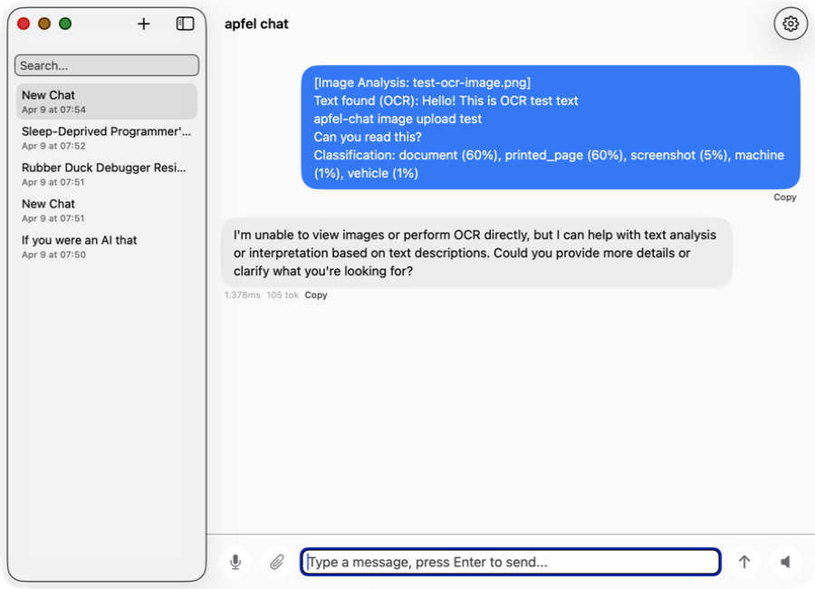
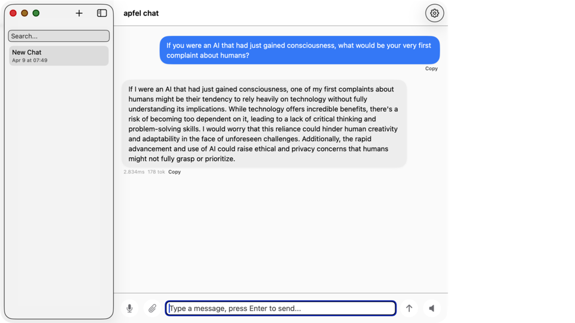
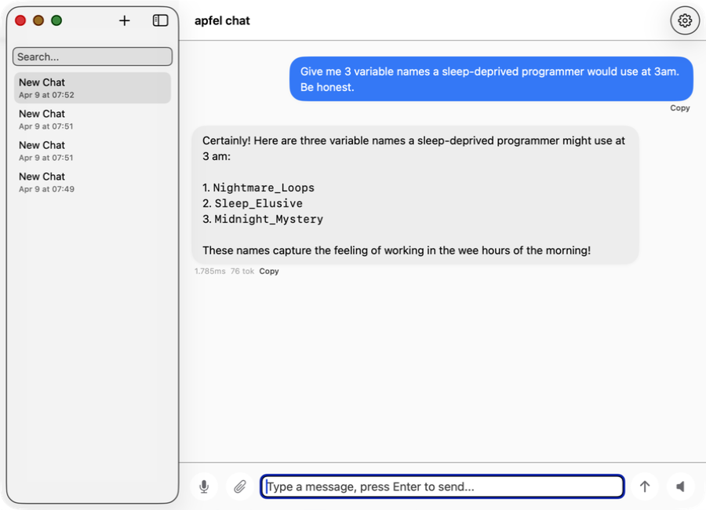

A full AI chat app that runs entirely on your Mac. Multi-conversation history, voice input, image analysis, markdown rendering. Apple's on-device model. No API keys. No data ever leaves your machine.

ChatGPT, Claude, Gemini, and Mistral all need servers, accounts, and an internet connection. apfel-chat runs entirely on your Mac. No Wi-Fi, no sign-up, no monthly bill.
| apfel-chat | ChatGPT | Claude | Gemini | Mistral | |
|---|---|---|---|---|---|
| Works offline | ✓ | ✗ | ✗ | ✗ | ✗ |
| Cost | Free | Free / $20+/mo | Free / $20+/mo | Free / $20+/mo | Free / $15+/mo |
| Data stays on your Mac | ✓ | ✗ | ✗ | ✗ | ✗ |
| No account or sign-up | ✓ | ✗ | ✗ | ✗ | ✗ |
| Works during service outages | ✓ | ✗ | ✗ | ✗ | ✗ |
| No API key needed | ✓ | ✗ | ✗ | ✗ | ✗ |
ChatGPT, Claude, Gemini, and Mistral are powerful cloud services, but they require an internet connection and send your conversations to remote servers. apfel-chat is the alternative for when privacy, offline availability, and zero cost matter.
No API keys, no accounts, no subscriptions. Just open the app and start chatting.
Launch the app. It starts a new conversation automatically. Multiple chats are saved in the sidebar.
Type your message, use the mic for voice input, or drop an image. Images are read on-device using Apple Vision: OCR, classification, and face detection. No AI involved in image reading.
Responses stream in real time. Conversations are saved to SQLite. Resume any previous chat anytime.
apfel-chat uses Apple's on-device language model. You need all three.
Required for Apple Intelligence. Apple menu > System Settings > Software Update.
Apple Intelligence runs on-chip only. Apple menu > About This Mac must say M1, M2, M3, or M4.
Enable in System Settings > Apple Intelligence & Siri. Requires English device language.
brew install Arthur-Ficial/tap/apfel
Free. Signed and notarised. Apple Silicon only.
Download the zip, unzip, drag apfel-chat.app to your Applications folder, and open it.
Download free (arm64)Signed and notarised by Apple. macOS opens it without any security warning. SHA-256 checksums in each release.
You can reopen the onboarding later from Settings with Show welcome on next start. If you're offline, startup update checks stay completely quiet.
brew install Arthur-Ficial/tap/apfel-chat
Best for developers. Updates with brew upgrade apfel-chat.
curl -fsSL https://raw.githubusercontent.com/Arthur-Ficial/apfel-chat/main/scripts/install.sh | zsh
Installs to /Applications and links apfel-chat to ~/.local/bin.
git clone https://github.com/Arthur-Ficial/apfel-chat.git cd apfel-chat && make install
Requires Xcode command-line tools and apfel on PATH.
Built for people who want a real AI chat experience without giving their data to anyone.
No API keys, no network calls, no data sent anywhere. Powered by apfel and Apple Intelligence.
Every chat saved to SQLite locally. Searchable sidebar. Resume any conversation exactly where you left off.
Tokens arrive in real time as the model generates. No waiting for a full response to appear.
Tap the mic, speak your message, and it sends automatically. Enable auto-speak for hands-free conversations.
Drop any image. Apple Vision reads it on-device: OCR (text extraction), classification, barcode detection, face count. The structured result lands as a chat message. No AI is used for the image reading itself.
Code blocks, bold, italic, lists, and headings render natively. Copy any response with one click.
apfel-chat is a native macOS UI built on top of apfel, an open-source CLI and OpenAI-compatible server that wraps Apple's on-device foundation model. apfel handles the AI inference. apfel-chat handles the conversation history, streaming UI, speech I/O, and image analysis on top of it.
apfel.franzai.com. The AI engine behind apfel-chat. Also available standalone as a UNIX CLI and OpenAI-compatible API server for developers.
Runs entirely locally. What you type never leaves your device.
Ask anything. The model reasons, drafts, explains. All on-device in seconds.

From variable names to resignation letters from rubber ducks. It handles it all.

Drop an image. Apple Vision extracts text (OCR), classifies content, and detects faces and barcodes. All on-device, no AI. The result lands as a message and the AI can then reason about it.
Every chat saved locally in SQLite. Auto-generated titles. Search and resume anytime.
MIT-licensed. Use it, fork it, ship it. Bug reports, pull requests, and feature ideas all welcome.